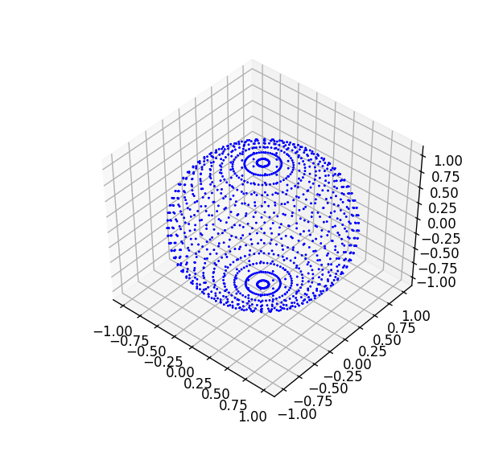
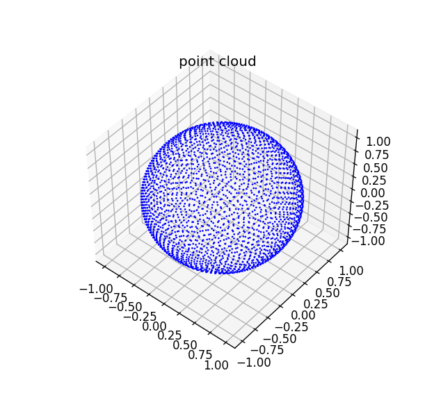

写在前面
在解决点云可见性问题时，需在同一视角（z轴正方向）下将点云绕其中心进行N次旋转变换，同时保证随机性（均匀性），所以需求一种生成N个随机旋转变换的采样方法。可以将求旋转变换的问题转化为对一个$r=1$的单位球面进行均匀采样的问题，因为球面上任意一点可看做是空间向量$\vec{v}(x,y,z)$，再用轴（叉乘产生的法向轴）角法计算与向量$\vec{z}(0,0,1)$间旋转变换，从而得到一些列的变换。但是！这样的操作选择性忽略了绕z轴的旋转，不过因为在z轴正方向视角下观察点云，绕z轴旋转并不影响可见性所以可以接受，因此这种方法其实并不是”全空间“的均匀采样。
球面均匀采样
球坐标系采样
为了对单位球面进行均匀采样，第一个想到的就是对球坐标系$(r,\theta,\phi)$中的$\theta$、$\phi$分别进行均匀采样，尝试绘制点云图如下所示，可见两级相较中间密度更大，整体并不均匀

python代码如下：1
2
3
4
5
6
7
8
9
10
11
12
13
14
15
16
17
18
19
20
21
22
23
24
25from numpy import *
import math
import matplotlib.pyplot as plt
from mpl_toolkits.mplot3d import Axes3D
x = []
y = []
z = []
N = 50
d = 2*math.pi/N
for i in range(N):
for j in range(N):
zt = math.sin(d*j)
zt_c = math.cos(d*j)
xt = zt_*math.cos(d*i)
yt = zt_*math.sin(d*i)
z.append(zt)
x.append(xt)
y.append(yt)
fig=plt.figure(dpi=120)
ax=fig.add_subplot(111,projection='3d')
ax.scatter(x,y,z,c='b',marker='.',s=10,linewidth=0,alpha=1,cmap='spectral')
plt.show()
基于斐波那契格点的球面均匀采样
根据参考文献2中所述的方法，尝试利用斐波那契格点进行球面均匀采样，通式如下，其中$n$为总N个点中第n个点，$\phi$为转角系数，$\phi$的取值并非任意，其决定了曲面上螺旋的“混乱”程度，对此参考文献3作出了详细的论证，较好的取值有$(\sqrt{5}-1)/2 \approx 0.618$、$\sqrt{2}-1 \approx 0.414$
结果如下图所示

python代码如下：1
2
3
4
5
6
7
8
9
10
11
12
13
14
15
16
17
18
19
20
21
22
23import math
import matplotlib.pyplot as plt
from mpl_toolkits.mplot3d import Axes3D
x = []
y = []
z = []
N = 2500
pi = math.pi
phi = 0.618
for n in range(1,N+1):
zt = (2*n-1.0)/float(N)-1
xt = math.sqrt(1-zt*zt)*math.cos(2*pi*n*phi)
yt = math.sqrt(1-zt*zt)*math.sin(2*pi*n*phi)
z.append(zt)
x.append(xt)
y.append(yt)
fig=plt.figure(dpi=120)
ax=fig.add_subplot(111,projection='3d')
ax.scatter(x,y,z,c='b',marker='.',s=10,linewidth=0,alpha=1,cmap='spectral')
plt.show()
代码实现
在通过上述方法得到单位球面均匀采样点后，通过计算$\vec{z}(0,0,1)$与$\vec{v}(x,y,z)$之间的旋转变换来得到一系列旋转变换，代码如下：
sphere_uniform_sampling.h
1 |
|
sphere_uniform_sampling.cpp
1 |
|
用法
1 | RotationSampling gen(100); |